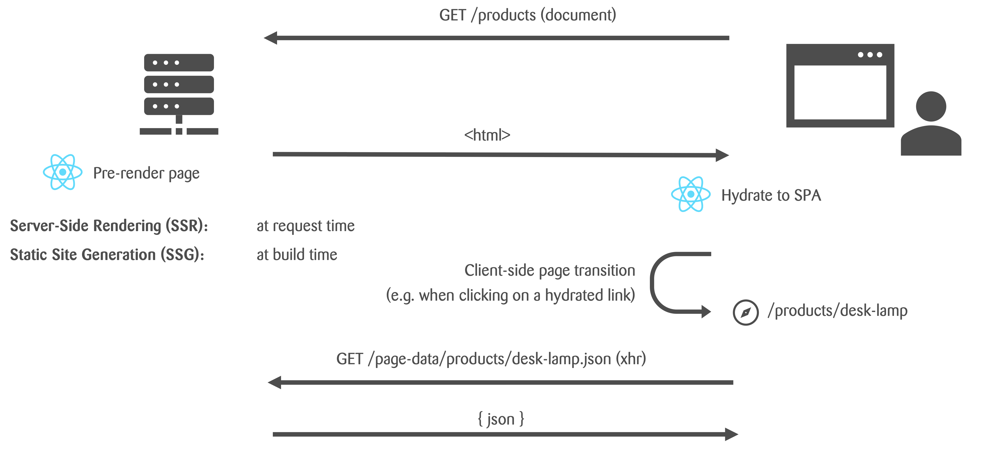

React Rendering Mechanisms
Overview

How does Pre-Rendering work?
Advantages of Pre-Rendering
- Search engine optimization (SEO), shareability
- Performance (especially as perceived)
React Router can be used in two different modes:
Data
- 'Classic' React Router
- For client-side-rendered React apps
- Focused on routing
- Provides API to optimize data fetching
→ We used that in chapter 05
Framework
- Brings typesafety and intelligent code splitting
- Enables SSR & static site generation
- Wraps the data mode
- Previously known as Remix
Create from scratch
$ npx create-react-router@latest my-react-router-app
? Initialize a new git repository?
> Yes
? Install dependencies with npm?
> Yes
$ cd ./my-react-router-app
$ npm run dev
Migrate from component Routes to Framework
Migration GuideStructure of the new setup
Folder structure
-
app/routes/*.tsx
the component referenced in app/routes.tsx -
app/routes.tsx
configures the routes (more details in next chapter) -
app/root.tsx
describes the app's HTML document / root layout -
public/*
public asset files -
react-router.config.ts
build options
app/root.tsx
react-router.config.ts
NPM scripts (package.json)
Routing in Framework Mode
General conventions
- Routes are configured in a routes.ts file
- Each route has two required parts: a URL pattern to match the URL, and a file path to the route module that defines its behavior.
index() indicates an index route
→ URLs / and /concerts
Static route segments
→ e.g. /about and/concerts/trending
Routes can be nested inside parent routes (e.g. layout,route).
→ URLs /login (layouts don't add any segments to the URL)
Dynamic route segments (parameters) start with :
→ e.g. /concerts/schlieren
- See React router docs for more details.
- Check the Remix docs for ideas on how to structure the files referenced in the router.
Loaders
Loaders
- Single, optional loader per route (export loader)
- Run on the server (only)
- Define a HTTP endpoint: request → response
- Result either serverside rendered and hydrated or fetched pre rendering
- useLoaderData to access response data in component
blog.$slug.tsx
Modifying the HTTP response
Modifying the HTTP response
Return a Response object…
Modifying the HTTP response
…or throw it!
Exercise
Setup & Routing
- Use the changes visible or applicable via patch file from chapter 10 baseline as a starting point
- Set up routes for pokemon list, pokemon detail, and profile pages & react-router.config.ts
- Test the SSR mode
Data Fetching
- Load the data for the list and detail pages from the Poke API
- Show the Not Found page if an unknown pokemon name is passed in the URL
- Stretch goal: Transform the data from the PokeAPI so that only the needed data is sent to the client
Solution
Matches the solution branch chapter-10-framework-mode
root.tsx
routes.ts
pages/list/ListPage.tsx
src\pages\details\DetailPage.tsx
Complete solution code can be found on GitHub on the branch chapter-10-framework-mode.
Additional framework mode features
How can we redirect to a different route?
E.g. / → /blog
How can we redirect to a different route?
E.g. / → /blog
_index.tsx
Must be a named export called loader.
_index.tsx
→ redirects to blog.tsx
Other Useful Route Module Exports
Creating a form
blog.$slug.tsx
Let's start simple: We can use a native HTML form.
blog.$slug.tsx
On the server the form is processed by an action.
blog.$slug.tsx
Form data is read from the request using the standard Request.formData() method.
blog.$slug.tsx
The data can then be processed as desired (validated, stored, etc.).
blog.$slug.tsx
Like the loader, the
action function can return a Response
object.
Typically, a redirect is returned to
implement the
Post/Redirect/Get
pattern.
blog.$slug.tsx
What will happen when the user clicks the Submit button?
→ It works! But it does a full document request: POST /blog/…
blog.$slug.tsx
The React-Router Form component together with the clientAction brings the expected SPA behavior
It still has the native form behavior as
long as JS has not loaded yet.
→ Progressive Enhancement
blog.$slug.tsx
The React-Router allows to access the generated types for typesafety on this level.
It also provides typse for actions and clientActions!
Things to consider when picking a mode
Client side rendered
- In most cases simple and lightweight
- Low hosting cost - just need a CDN
- Many many projects have been built and run successfully and perform very well
- Simpler mental model - all code only runs in browser
Server side rendered
- Best possible performance needed
- Added complexity due to part of serverside/clientside logic
- Additional vulnerability through all packages involved due to nodejs running
- Can hide/abstract API's and acts as backend-for-frontend
- Serverside dependencies can leak into the delivered bundle...
- Hydration error... ðŸ˜
If unsure, go for client side rendering with framework mode (and loaders)
Recap
We learned…
- What server-side rendering (SSR) is
- How to set up a React Router app from scratch
- How to do routing in React Router framework mode
- How to fetch data with loaders
- How to create and process forms on the server
- What to consider when deciding on SSR/CSR